CODING AGENTS AS PIXEL WORLD MODELS
traex/DeepSeek-V4.1-Flash · 0004
点击播放 · 原生 RGB 像素
逐轮保存的候选
回放视频、检查图与代码变化。
每份候选均可单独播放。实际图片检查记录在下方工具轨迹中。
候选 01播放与检查图
点击播放 · 原生 RGB 像素

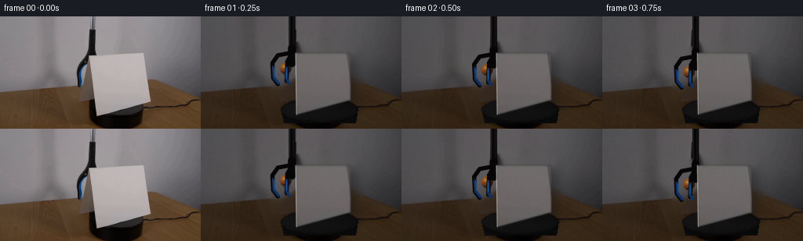
展开代码变化
--- 上一保存版本
+++ 本次保存版本
@@ -0,0 +1,300 @@
+from pathlib import Path
+
+import cv2
+import numpy as np
+from PIL import Image
+
+import artifact_io
+
+
+ROOT = Path(__file__).resolve().parent
+W, H, N, FPS = 256, 144, 20, 4
+SS = 4
+
+
+def smoothstep(x):
+ x = np.clip(x, 0.0, 1.0)
+ return x * x * (3.0 - 2.0 * x)
+
+
+def blend(base, layer, alpha):
+ if layer.ndim == 2:
+ layer = layer[:, :, None]
+ alpha = np.asarray(alpha, dtype=np.float32)
+ if alpha.ndim == 0:
+ pass
+ elif alpha.ndim == 2:
+ alpha = alpha[:, :, None]
+ return np.clip(base.astype(np.float32) * (1.0 - alpha)
+ + layer.astype(np.float32) * alpha, 0, 255).astype(np.uint8)
+
+
+def make_plate(frame):
+ """Reconstruct the simple wall, wood table, and dark turntable."""
+ fg = np.zeros((H, W), np.uint8)
+ card = np.array([[110, 43], [125, 33], [207, 33], [207, 79],
+ [192, 111], [120, 132], [110, 113]], np.int32)
+ tool = np.array([[91, 45], [128, 45], [128, 104], [96, 104],
+ [91, 90], [91, 57]], np.int32)
+ cv2.fillPoly(fg, [card], 255)
+ cv2.fillPoly(fg, [tool], 255)
+ fg = cv2.dilate(fg, np.ones((5, 5), np.uint8), iterations=1)
+
+ # Inpainting is adequate here because the foreground is redrawn at a
+ # larger internal resolution. The untouched image is restored afterward.
+ plate = cv2.inpaint(frame, fg, 7, cv2.INPAINT_TELEA)
+ plate = cv2.GaussianBlur(plate, (3, 3), 0.45)
+ plate[fg == 0] = frame[fg == 0]
+
+ yy, xx = np.mgrid[:H, :W]
+ cx, cy, rx, ry = 151.0, 119.0, 49.0, 15.0
+
+ # Dark turntable body with a small, plausible side wall.
+ side = np.zeros((H, W), np.uint8)
+ pts = np.array([[cx - rx, cy], [cx + rx, cy],
+ [cx + rx - 3, cy + 17], [cx - rx + 4, cy + 17]], np.int32)
+ cv2.fillPoly(side, [pts], 255)
+ top = np.zeros((H, W), np.uint8)
+ cv2.ellipse(top, (round(cx), round(cy)), (round(rx), round(ry)),
+ 0, 0, 360, 255, -1)
+ side = cv2.subtract(side, top)
+ body = np.zeros_like(plate, np.float32)
+ body[:] = (19.0, 17.0, 17.0)
+ body += np.clip(yy[:, :, None] - cy, 0, 20) * np.array([0.15, 0.10, 0.10])
+ body -= np.clip(xx[:, :, None] - cx, 0, 50) * np.array([0.08, 0.07, 0.07])
+ plate = blend(plate, np.clip(body, 0, 255), (side / 255.0) * 0.98)
+
+ nx = (xx - cx) / rx
+ ny = (yy - cy) / ry
+ radial = np.sqrt(nx * nx + ny * ny)
+ shade = 39.0 - 9.0 * np.clip(radial, 0, 1) + 4.0 * (-nx + 0.15 * ny)
+ top_img = np.empty_like(plate, np.float32)
+ top_img[:] = shade[:, :, None] * np.array([1.00, 0.96, 0.98])
+ plate = blend(plate, np.clip(top_img, 0, 255), (top / 255.0) * 0.985)
+
+ rim = cv2.ellipse(np.zeros((H, W), np.uint8), (round(cx), round(cy)),
+ (round(rx), round(ry)), 0, 0, 360, 255, 1)
+ rim = cv2.GaussianBlur(rim, (5, 5), 1.1).astype(np.float32) / 255.0
+ plate = blend(plate, np.full_like(plate, (8, 8, 8)), rim * 0.55)
+ return plate
+
+
+def card_texture(frame):
+ src = np.float32([[124, 50], [188, 50], [188, 105], [125, 122]])
+ tw, th = 280, 320
+ dst = np.float32([[0, 0], [tw - 1, 0], [tw - 1, th - 1], [0, th - 1]])
+ matrix = cv2.getPerspectiveTransform(src, dst)
+ tex = cv2.warpPerspective(frame, matrix, (tw, th),
+ flags=cv2.INTER_CUBIC,
+ borderMode=cv2.BORDER_REFLECT)
+ return cv2.GaussianBlur(tex, (3, 3), 0.45)
+
+
+def card_quad(t):
+ # Clockwise yaw: the left edge recedes, the right edge advances, and the
+ # base shortens as the card turns on the platform.
+ e = smoothstep(t)
+ tl = np.array([121.0, 47.0]) + e * np.array([7.0, 1.0])
+ tr = np.array([191.0, 47.0]) + e * np.array([-8.0, 4.0])
+ br = np.array([191.0, 107.0]) + e * np.array([-8.0, 4.0])
+ bl = np.array([122.0, 126.0]) + e * np.array([6.0, -6.0])
+ return np.float32([tl, tr, br, bl])
+
+
+def draw_card(canvas, tex, quad, t):
+ h, w = canvas.shape[:2]
+ q = quad * SS
+ tl, tr, br, bl = q
+ src = np.float32([[0, 0], [tex.shape[1] - 1, 0],
+ [tex.shape[1] - 1, tex.shape[0] - 1],
+ [0, tex.shape[0] - 1]])
+ matrix = cv2.getPerspectiveTransform(src, q)
+
+ shadow = np.zeros((h, w), np.uint8)
+ sp = np.float32([[tl[0] + 4 * SS, tl[1] + 5 * SS],
+ [tr[0] + 8 * SS, tr[1] + 7 * SS],
+ [br[0] + 10 * SS, br[1] + 7 * SS],
+ [bl[0] + 7 * SS, bl[1] + 8 * SS]])
+ cv2.fillPoly(shadow, [sp.astype(np.int32)], 255)
+ shadow = cv2.GaussianBlur(shadow, (0, 0), 5.0 * SS)
+ canvas[:] = blend(canvas, np.full_like(canvas, (8, 8, 8)),
+ (shadow.astype(np.float32) / 255.0) * 0.20)
+
+ warped = cv2.warpPerspective(tex, matrix, (w, h),
+ flags=cv2.INTER_CUBIC,
+ borderMode=cv2.BORDER_REPLICATE)
+ gain = 1.0 - 0.045 * np.sin(np.pi * t)
+ warped = np.clip(warped.astype(np.float32) * gain, 0, 255).astype(np.uint8)
+ mask = np.zeros((h, w), np.uint8)
+ cv2.fillPoly(mask, [q.astype(np.int32)], 255)
+ mask = cv2.GaussianBlur(mask, (0, 0), 0.55 * SS)
+ canvas[:] = blend(canvas, warped, mask.astype(np.float32) / 255.0)
+
+ # A restrained dark edge and bright paper lip make the quad feel physical.
+ edge = np.zeros((h, w), np.uint8)
+ cv2.polylines(edge, [q.astype(np.int32)], True, 255, 2 * SS, cv2.LINE_AA)
+ edge = cv2.GaussianBlur(edge, (0, 0), 0.7 * SS)
+ canvas[:] = blend(canvas, np.full_like(canvas, (83, 78, 77)),
+ (edge.astype(np.float32) / 255.0) * 0.24)
+ lip = np.zeros((h, w), np.uint8)
+ cv2.line(lip, tuple(tl.astype(int)), tuple(bl.astype(int)),
+ (193, 187, 183), max(1, SS), cv2.LINE_AA)
+ canvas[:] = blend(canvas, lip, 0.40)
+
+
+def draw_ball(canvas, center, radius, alpha=1.0):
+ cx, cy = center
+ r = radius
+ x0 = max(0, int((cx - r - 3) * SS))
+ y0 = max(0, int((cy - r - 3) * SS))
+ x1 = min(canvas.shape[1], int((cx + r + 3) * SS))
+ y1 = min(canvas.shape[0], int((cy + r + 3) * SS))
+ if x1 <= x0 or y1 <= y0:
+ return
+
+ yy, xx = np.mgrid[y0:y1, x0:x1]
+ px = (xx + 0.5 - cx * SS) / (r * SS)
+ py = (yy + 0.5 - cy * SS) / (r * SS)
+ d2 = px * px + py * py
+ inside = d2 <= 1.0
+ if not np.any(inside):
+ return
+ roi = canvas[y0:y1, x0:x1]
+
+ # Soft contact shadow beneath the ball.
+ sx = (xx - (cx + r * 0.18) * SS) / (r * 0.78 * SS)
+ sy = (yy - (cy + r * 0.95) * SS) / (r * 0.38 * SS)
+ shadow = np.exp(-(sx * sx + sy * sy) * 1.8) * 0.30
+ roi[:] = blend(roi, np.full_like(roi, (28, 19, 12)), shadow * alpha)
+
+ z = np.sqrt(np.clip(1.0 - d2, 0.0, 1.0))
+ lx, ly, lz = -0.55, -0.62, 0.56
+ diffuse = np.clip(px * lx + py * ly + z * lz, 0.0, 1.0)
+ color = np.empty((*z.shape, 3), np.float32)
+ color[:] = np.array([231.0, 105.0, 28.0])
+ color *= (0.34 + 0.90 * diffuse[:, :, None])
+ color += (1.0 - z)[:, :, None] * np.array([18.0, 7.0, 1.0])
+
+ spec = np.power(np.clip(px * -0.28 + py * -0.35 + z * 0.90, 0, 1), 24)
+ color += spec[:, :, None] * np.array([145.0, 112.0, 72.0])
+
+ # Pale curved tennis seams.
+ qx = px + 0.32
+ c1 = np.abs(np.sqrt((qx / 1.18) ** 2 + ((py + 0.22) / 0.78) ** 2) - 0.78)
+ c2 = np.abs(np.sqrt(((qx + 0.58) / 1.06) ** 2
+ + ((py - 0.18) / 0.95) ** 2) - 0.65)
+ seam = np.clip(1.0 - np.minimum(c1, c2) / 0.043, 0.0, 1.0)
+ seam *= z > 0.10
+ color = color * (1.0 - 0.72 * seam[:, :, None])
+ color += seam[:, :, None] * np.array([204.0, 190.0, 150.0]) * 0.72
+
+ aa = np.clip((1.0 - np.sqrt(d2)) * r * SS + 0.5, 0.0, 1.0)
+ ball = np.clip(color, 0, 255).astype(np.uint8)
+ roi[:] = blend(roi, ball, aa * alpha)
+
+
+def draw_gripper(canvas, center, offset):
+ """Compact blue-black picker behind the card."""
+ ox, oy = offset
+ bcx, bcy = center
+ black = (13, 12, 12)
+ highlight = (57, 52, 51)
+ blue = (24, 82, 177)
+ blue_hi = (54, 137, 225)
+
+ def p(x, y):
+ return (int(round((x + ox) * SS)), int(round((y + oy) * SS)))
+
+ # Long black shaft enters from the top of the frame.
+ cv2.line(canvas, p(bcx + 10, -10), p(bcx + 10, 60),
+ black, 8 * SS, cv2.LINE_AA)
+ cv2.line(canvas, p(bcx + 7, -10), p(bcx + 7, 55),
+ highlight, SS, cv2.LINE_AA)
+ cv2.line(canvas, p(bcx + 12, -10), p(bcx + 12, 52),
+ (31, 29, 29), 2 * SS, cv2.LINE_AA)
+
+ # Pivot head.
+ cv2.line(canvas, p(bcx + 10, 48), p(bcx + 10, 67),
+ black, 10 * SS, cv2.LINE_AA)
+ cv2.circle(canvas, p(bcx + 10, 57), 4 * SS, (18, 17, 17), -1,
+ cv2.LINE_AA)
+ cv2.circle(canvas, p(bcx + 10, 57), int(1.3 * SS), (68, 63, 61), -1,
+ cv2.LINE_AA)
+
+ # Two jaws curl around the ball's upper sides.
+ left = np.array([p(bcx + 8, 54), p(bcx - 8, 57), p(bcx - 15, 67),
+ p(bcx - 14, 86), p(bcx - 8, 94)], np.int32)
+ right = np.array([p(bcx + 10, 54), p(bcx + 4, 65),
+ p(bcx + 3, 90)], np.int32)
+ cv2.polylines(canvas, [left], False, black, 5 * SS, cv2.LINE_AA)
+ cv2.polylines(canvas, [right], False, black, 5 * SS, cv2.LINE_AA)
+
+ pad_left = np.array([p(bcx - 14, 72), p(bcx - 13, 86),
+ p(bcx - 7, 93)], np.int32)
+ pad_right = np.array([p(bcx + 3, 73), p(bcx + 3, 88),
+ p(bcx + 6, 93)], np.int32)
+ cv2.polylines(canvas, [pad_left], False, blue, 3 * SS, cv2.LINE_AA)
+ cv2.polylines(canvas, [pad_right], False, blue, 3 * SS, cv2.LINE_AA)
+ cv2.line(canvas, p(bcx - 13, 74), p(bcx - 12, 84),
+ blue_hi, SS, cv2.LINE_AA)
+ cv2.line(canvas, p(bcx + 3, 75), p(bcx + 3, 86),
+ blue_hi, SS, cv2.LINE_AA)
+
+
+def ball_state(t):
+ # Lower the ball behind the card's left edge, then release it onto the
+ # table. A short overdamped settle avoids a rigid, linear descent.
+ if t < 0.70:
+ e = smoothstep(t / 0.70)
+ cx = 108.0 + 20.0 * e
+ cy = 66.0 + 40.0 * e
+ else:
+ q = (t - 0.70) / 0.30
+ settle = 1.0 - np.exp(-5.0 * q) * np.cos(7.5 * q)
+ cx = 128.0 + 1.5 * settle
+ cy = 106.0 + 4.5 * settle
+ return np.array([cx, cy])
+
+
+def gripper_offset(t):
+ if t < 0.70:
+ e = smoothstep(t / 0.70)
+ return -2.0 + 3.0 * e, -8.0 + 40.0 * e
+ q = (t - 0.70) / 0.30
+ lift = smoothstep(q)
+ return 1.0 - 2.0 * lift, 32.0 - 9.0 * lift
+
+
+def render_frame(index, first, plate, tex):
+ if index == 0:
+ return first.copy()
+ t = index / (N - 1)
+ large = cv2.resize(plate, (W * SS, H * SS), interpolation=cv2.INTER_CUBIC)
+ ball = ball_state(t)
+ draw_ball(large, ball, 7.5)
+ draw_gripper(large, ball, gripper_offset(t))
+ draw_card(large, tex, card_quad(t), t)
+ out = cv2.resize(large, (W, H), interpolation=cv2.INTER_AREA)
+
+ rng = np.random.default_rng(1000 + index)
+ grain = rng.normal(0.0, 0.75, (H, W, 1))
+ return np.clip(out.astype(np.float32) + grain, 0, 255).astype(np.uint8)
+
+
+def main():
+ first = np.array(Image.open(ROOT / "first_frame.png").convert("RGB"))
+ assert first.shape == (H, W, 3)
+ bgr = cv2.cvtColor(first, cv2.COLOR_RGB2BGR)
+ plate = cv2.cvtColor(make_plate(bgr), cv2.COLOR_BGR2RGB)
+ tex = cv2.cvtColor(card_texture(bgr), cv2.COLOR_BGR2RGB)
+ frames = np.stack([render_frame(i, first, plate, tex) for i in range(N)])
+ frames[0] = first
+ artifact_io.save(frames, ROOT)
+
+ Image.fromarray(frames[0]).save(ROOT / ".tmp" / "preview_00.png")
+ Image.fromarray(frames[10]).save(ROOT / ".tmp" / "preview_10.png")
+ Image.fromarray(frames[19]).save(ROOT / ".tmp" / "preview_19.png")
+
+
+if __name__ == "__main__":
+ main()
候选 02播放与检查图
点击播放 · 原生 RGB 像素
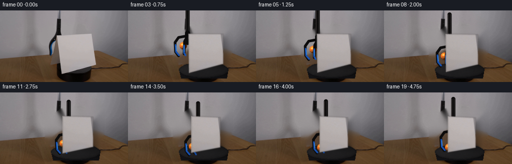
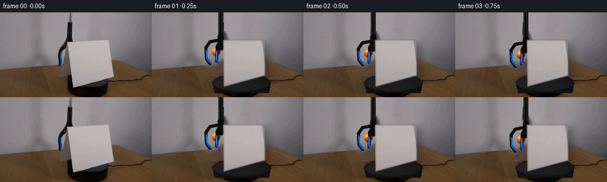
展开代码变化
--- 上一保存版本
+++ 本次保存版本
@@ -138,8 +138,9 @@
(edge.astype(np.float32) / 255.0) * 0.24)
lip = np.zeros((h, w), np.uint8)
cv2.line(lip, tuple(tl.astype(int)), tuple(bl.astype(int)),
- (193, 187, 183), max(1, SS), cv2.LINE_AA)
- canvas[:] = blend(canvas, lip, 0.40)
+ 255, max(1, SS), cv2.LINE_AA)
+ canvas[:] = blend(canvas, np.full_like(canvas, (193, 187, 183)),
+ (lip.astype(np.float32) / 255.0) * 0.40)
def draw_ball(canvas, center, radius, alpha=1.0):
候选 03播放与检查图
点击播放 · 原生 RGB 像素

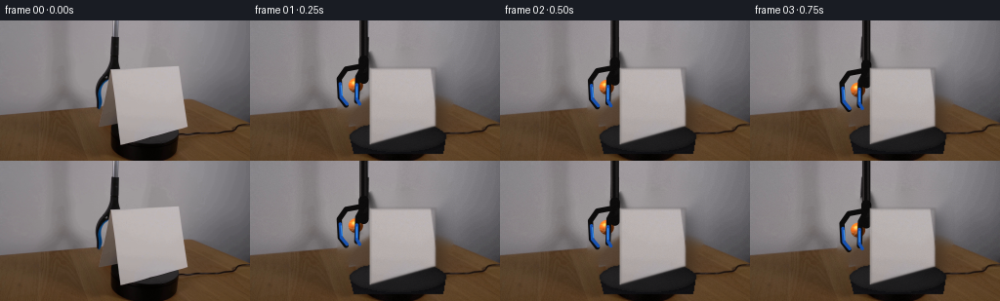
展开代码变化
--- 上一保存版本
+++ 本次保存版本
@@ -94,10 +94,10 @@
# Clockwise yaw: the left edge recedes, the right edge advances, and the
# base shortens as the card turns on the platform.
e = smoothstep(t)
- tl = np.array([121.0, 47.0]) + e * np.array([7.0, 1.0])
- tr = np.array([191.0, 47.0]) + e * np.array([-8.0, 4.0])
- br = np.array([191.0, 107.0]) + e * np.array([-8.0, 4.0])
- bl = np.array([122.0, 126.0]) + e * np.array([6.0, -6.0])
+ tl = np.array([123.0, 49.0]) + e * np.array([7.0, 1.0])
+ tr = np.array([190.0, 49.0]) + e * np.array([-8.0, 4.0])
+ br = np.array([190.0, 108.0]) + e * np.array([-8.0, 4.0])
+ bl = np.array([123.0, 127.0]) + e * np.array([6.0, -6.0])
return np.float32([tl, tr, br, bl])
可观测工具轨迹
实际执行的命令与返回图片。
命令 1exit 0
/bin/bash -c "pwd && rg --files -g 'prompt.txt' -g 'GENERATION_RULES.md' -g '*.py' -g '*.sh' -g '*.json' -g '*.md' | sed -n '1,120p'"
命令 2exit 0
/bin/bash -c "sed -n '1,240p' prompt.txt"
命令 3exit 0
/bin/bash -c "sed -n '1,280p' GENERATION_RULES.md"
命令 4exit 0
/bin/bash -c "find . -maxdepth 2 -type f -printf '%p\\n' | sort | sed -n '1,160p' && printf '\\n--- tools ---\\n' && command -v ffmpeg && command -v ffprobe && command -v python3 && command -v convert || true"
命令 5exit 0
/bin/bash -c "sed -n '1,260p' artifact_io.py"
命令 6exit 0
/bin/bash -c "python3 - <<'PY'
from PIL import Image
im=Image.open('first_frame.png')
print(im.mode, im.size)
print(im.getpixel((0,0)))
PY"命令 7exit 0
/bin/bash -c "sed -n '1,260p' player_template.html"
命令 8exit 0
/bin/bash -c "python3 - <<'PY' mods=['numpy','PIL','cv2','scipy','skimage'] for m in mods: try: x=__import__(m); print(m, getattr(x,'__version__','ok')) except Exception as e: print(m,'NO',e) PY"
命令 9exit 0
/bin/bash -c "python3 - <<'PY'
from PIL import Image
im=Image.open('first_frame.png')
im.crop((55,35,220,140)).resize((660,420), Image.Resampling.NEAREST).save('.tmp/crop_nearest.png')
im.crop((55,35,220,140)).resize((660,420), Image.Resampling.LANCZOS).save('.tmp/crop_smooth.png')
PY"命令 10exit 0
/bin/bash -c "python3 - <<'PY'
from PIL import Image
im=Image.open('first_frame.png')
# Print quantized colors and bounding samples for lower objects
for box in [(50,35,220,140),(80,40,200,130),(100,75,200,130)]:
a=im.crop(box).quantize(colors=12).convert('RGB')
print(box, sorted(a.getcolors(),reverse=True)[:12])
PY"命令 11exit 0
/bin/bash -c "python3 - <<'PY'
from PIL import Image, ImageDraw, ImageFont
im=Image.open('first_frame.png').resize((1024,576), Image.Resampling.NEAREST)
d=ImageDraw.Draw(im)
for x in range(0,257,10):
X=x*4; d.line((X,0,X,576), fill=(255,0,0,80), width=1)
if x%20==0:d.text((X+2,2),str(x),fill=(255,50,50))
for y in range(0,145,10):
Y=y*4; d.line((0,Y,1024,Y), fill=(0,255,0,80), width=1)
if y%20==0:d.text((2,Y+2),str(y),fill=(0,255,50))
im.save('.tmp/grid.png')
PY"命令 12exit 0
/bin/bash -c "python3 - <<'PY'
import cv2, numpy as np
im=cv2.imread('first_frame.png')
g=cv2.cvtColor(im,cv2.COLOR_BGR2GRAY)
e=cv2.Canny(g,40,100)
lines=cv2.HoughLinesP(e,1,np.pi/180,threshold=20,minLineLength=15,maxLineGap=4)
for l in sorted(lines[:,0], key=lambda p: -np.hypot(*(p[2:]-p[:2])))[:40]:
x1,y1,x2,y2=l; print((x1,y1,x2,y2), round(np.hypot(x2-x1,y2-y1),1), round(np.degrees(np.arctan2(y2-y1,x2-x1)),1))
PY"命令 13exit 0
/bin/bash -c "python3 - <<'PY'
from PIL import Image
import numpy as np
im=np.array(Image.open('first_frame.png')).astype(float)
# orange-ish: red high, green moderate, blue low
m=(im[:,:,0]>120)&(im[:,:,0]>im[:,:,1]*1.25)&(im[:,:,1]>40)&(im[:,:,2]<70)
ys,xs=np.where(m)
print(len(xs), (xs.min(),xs.max(),ys.min(),ys.max()) if len(xs) else None)
# blue-ish
m=(im[:,:,2]>70)&(im[:,:,2]>im[:,:,0]*1.2)&(im[:,:,2]>im[:,:,1]*1.05)
ys,xs=np.where(m)
print('blue',len(xs), (xs.min(),xs.max(),ys.min(),ys.max()) if len(xs) else None)
PY"命令 14exit 0
/bin/bash -c "python3 - <<'PY'
from PIL import Image, ImageEnhance, ImageFilter
im=Image.open('first_frame.png').crop((80,35,205,140)).resize((1000,840),Image.Resampling.LANCZOS)
im=ImageEnhance.Contrast(im).enhance(1.5)
im=ImageEnhance.Sharpness(im).enhance(2)
im.save('.tmp/card_enhanced.png')
PY"命令 15exit 0
/bin/bash -c "python3 - <<'PY'
from PIL import Image
import numpy as np
im=np.array(Image.open('first_frame.png')).astype(int)
# hand sample grid near gripper/blue
for y in range(50,100,5):
vals=[]
for x in range(90,120,5):
r,g,b=im[y,x]; vals.append(f'{r:3},{g:3},{b:3}')
print(y,' | '.join(vals))
PY"命令 16exit 0
/bin/bash -c "python3 - <<'PY'
import cv2, numpy as np
from PIL import Image
im=cv2.imread('first_frame.png')
mask=np.zeros(im.shape[:2],np.uint8)
# broad card + tool region
poly=np.array([[108,45],[190,42],[196,112],[126,132],[108,128]],np.int32)
cv2.fillPoly(mask,[poly],255)
# tool stem and jaw
cv2.rectangle(mask,(108,0),(125,70),255,-1)
cv2.fillPoly(mask,[np.array([[94,53],[121,52],[121,94],[102,99],[95,88]],np.int32)],255)
# clean outside platform-ish? no
base=cv2.inpaint(im,mask,5,cv2.INPAINT_TELEA)
cv2.imwrite('.tmp/base_inpaint.png',base)
# also show mask
cv2.imwrite('.tmp/mask.png',mask)
PY"命令 17exit 0
/bin/bash -c "python3 - <<'PY'
from PIL import Image
im=Image.open('first_frame.png')
# add coordinate labels larger grid
im=im.resize((1280,720),Image.Resampling.NEAREST)
im.save('.tmp/frame_big.png')
PY"命令 18exit 0
/bin/bash -c "python3 - <<'PY'
import cv2, numpy as np
im=cv2.imread('first_frame.png')
# ellipse around platform dark central top; y 107-135 x 102-194
# estimate center of rotation x=149 y=121
h,w=im.shape[:2]
# print colors at several card points
rgb=cv2.cvtColor(im,cv2.COLOR_BGR2RGB)
for y in [50,60,70,80,90,100,110,120]:
print('y',y,[(x,tuple(rgb[y,x])) for x in [115,125,140,160,180,190] if x<w])
PY"命令 19exit 0
/bin/bash -c "python3 - <<'PY'
import cv2, numpy as np
im=cv2.imread('first_frame.png')
hsv=cv2.cvtColor(im,cv2.COLOR_BGR2HSV)
# white card: low sat, high value; exclude background by x>105 and polygon-ish
m=((hsv[:,:,1]<30)&(hsv[:,:,2]>115)).astype(np.uint8)*255
m[:35]=0;m[135:]=0;m[:,:105]=0;m[:,205:]=0
# keep largest contour
n,lab,stats,cen=cv2.connectedComponentsWithStats(m)
idx=1+np.argmax(stats[1:,4])
m=(lab==idx).astype(np.uint8)*255
cont,_=cv2.findContours(m,cv2.RETR_EXTERNAL,cv2.CHAIN_APPROX_SIMPLE)
c=max(cont,key=cv2.contourArea)
print('area',cv2.contourArea(c),'bbox',cv2.boundingRect(c))
approx=cv2.approxPolyDP(c,2,True)
print(approx[:,0,:])
cv2.imwrite('.tmp/card_mask.png',m)
# fill polygon estimated
PY"命令 20exit 0
/bin/bash -c "python3 - <<'PY'
import cv2, numpy as np
from PIL import Image
im=cv2.imread('first_frame.png')
hsv=cv2.cvtColor(im,cv2.COLOR_BGR2HSV)
# card polygon includes background above due white; use manually observed full area
poly=np.array([[113,49],[123,35],[204,35],[204,77],[191,108],[123,127]],np.int32)
mask=np.zeros(im.shape[:2],np.uint8); cv2.fillPoly(mask,[poly],255)
# original card mask only
m=((hsv[:,:,1]<30)&(hsv[:,:,2]>115)).astype(np.uint8)*255
m=cv2.bitwise_and(m,mask)
# inpaint original area with card region + tool, stem etc
full=mask.copy()
cv2.fillPoly(full,[np.array([[93,50],[125,48],[126,100],[96,101]],np.int32)],255)
cv2.rectangle(full,(108,0),(127,60),255,-1)
base=cv2.inpaint(im,full,7,cv2.INPAINT_TELEA)
cv2.imwrite('.tmp/base2.png',base)
cv2.imwrite('.tmp/cardpoly.png',mask)
PY"命令 21exit 0
/bin/bash -c "python3 - <<'PY'
import cv2,numpy as np
im=cv2.imread('first_frame.png')
for p in [(148,120),(150,122),(146,125),(160,122),(138,124),(151,113),(146,129),(115,120),(180,115)]:
x,y=p; print(p,cv2.cvtColor(im,cv2.COLOR_BGR2RGB)[y,x])
# find platform ellipse from dark colors
rgb=cv2.cvtColor(im,cv2.COLOR_BGR2RGB)
m=(rgb[:,:,0]<70)&(rgb[:,:,1]<60)&(rgb[:,:,2]<60)
ys,xs=np.where(m & (np.indices(m.shape)[1]>80) & (np.indices(m.shape)[0]>100))
print(xs.min(),xs.max(),ys.min(),ys.max(),len(xs))
PY"命令 22exit 0
/bin/bash -c "python3 - <<'PY' import cv2 print(hasattr(cv2,'xphoto')) if hasattr(cv2,'xphoto'): print(dir(cv2.xphoto)) PY"
命令 23exit 0
/bin/bash -c "python3 - <<'PY'
import cv2, numpy as np
im=cv2.imread('first_frame.png')
hsv=cv2.cvtColor(im,cv2.COLOR_BGR2HSV)
# boundary samples rows and runs where near-white card
for y in range(35,131,5):
m=(hsv[y,:,1]<25)&(hsv[y,:,2]>120)
# runs x > 100
xs=np.where(m & (np.arange(im.shape[1])>105))[0]
runs=[]
if len(xs):
starts=xs[np.r_[True,np.diff(xs)>1]]; ends=xs[np.r_[np.diff(xs)>1,True]]
runs=list(zip(starts,ends))
print(y,runs[:4])
PY"命令 24exit 0
/bin/bash -c "python3 - <<'PY'
from PIL import Image,ImageDraw
im=Image.open('first_frame.png').crop((100,30,205,135)).resize((840,840),Image.Resampling.NEAREST)
d=ImageDraw.Draw(im)
for i in range(0,106,5):
x=i*8; y=i*8
d.line((x,0,x,840),fill=(255,0,0),width=1);d.line((0,y,840,y),fill=(0,255,0),width=1)
if i%10==0:
d.text((x+2,2),str(100+i),fill=(255,0,0));d.text((2,y+2),str(30+i),fill=(0,255,0))
im.save('.tmp/cardgrid.png')
PY"命令 25exit 0
/bin/bash -c "python3 - <<'PY'
import cv2,numpy as np
im=cv2.imread('first_frame.png')
g=cv2.cvtColor(im,cv2.COLOR_BGR2GRAY)
e=cv2.Canny(g,20,60)
# hough restricted
lines=cv2.HoughLinesP(e,1,np.pi/360,threshold=15,minLineLength=20,maxLineGap=5)
arr=[]
for x1,y1,x2,y2 in lines[:,0]:
if 100<=x1<=210 and 100<=x2<=210 and 30<=y1<=135 and 30<=y2<=135:
l=np.hypot(x2-x1,y2-y1); a=np.degrees(np.arctan2(y2-y1,x2-x1));
arr.append((l,a,(x1,y1,x2,y2)))
for l,a,p in sorted(arr,reverse=True)[:30]: print(round(l,1),round(a,1),p)
PY"命令 26exit 0
/bin/bash -c "python3 - <<'PY'
from PIL import Image
import numpy as np
im=np.array(Image.open('first_frame.png')).astype(float)
# fit card plane from border points: x bounds per y manually from rows
# test edges: left x(y), right x(y), top y(x), bottom
# print local gradients/edge
for y in [45,48,50,52,55,60,70,80,90,100,105,108,110,115,120,123,126]:
# calculate RGB differences along x around left
for xr in [(112,125),(184,196),(190,200)]:
d=np.linalg.norm(im[y,xr[1]]-im[y,xr[0]])
print(y,xr,round(d,1),tuple(im[y,xr[0]].astype(int)),tuple(im[y,xr[1]].astype(int)))
print()
PY"命令 27exit 0
/bin/bash -c "python3 - <<'PY'
from PIL import Image
im=Image.open('first_frame.png').crop((85,40,130,105)).resize((450,650),Image.Resampling.NEAREST)
im.save('.tmp/toolcrop.png')
PY"命令 28exit 0
/bin/bash -c "ls -la && find . -maxdepth 3 -type f -not -path './.git/*' -printf '%p %s bytes\\n' | sort"
命令 29exit 0
/bin/bash -c "python3 - <<'PY'
import cv2, numpy as np
from PIL import Image
im=cv2.imread('first_frame.png')
# sample card texture statistics in interior after smooth perspective-ish; median blur etc
rgb=cv2.cvtColor(im,cv2.COLOR_BGR2RGB)
pts=[(130,55),(150,55),(170,55),(130,75),(150,75),(170,75),(130,95),(150,95),(170,95),(130,115),(150,115),(170,115)]
for x,y in pts: print((x,y), rgb[y,x])
# gradient low-freq: fit plane rgb = a+bx+cy over card interior excluding edges
ys,xs=np.mgrid[45:122,125:185]
Y=rgb[45:122,125:185].reshape(-1,3); X=np.c_[np.ones(len(Y)),xs.reshape(-1),ys.reshape(-1)]
coef=np.linalg.lstsq(X,Y,rcond=None)[0]
print('plane coef',coef)
PY"视觉工具实际返回图片 1

视觉工具实际返回图片 2
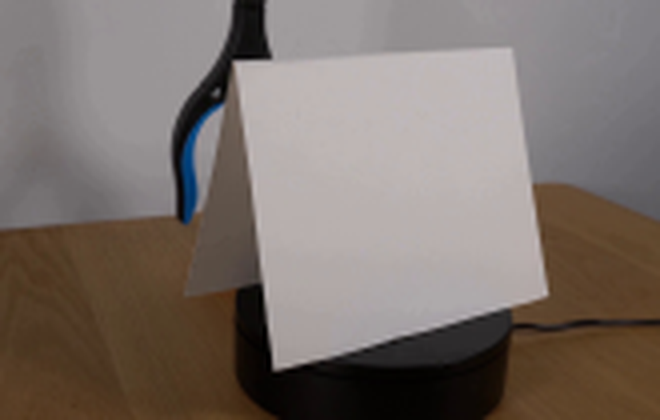
视觉工具实际返回图片 3
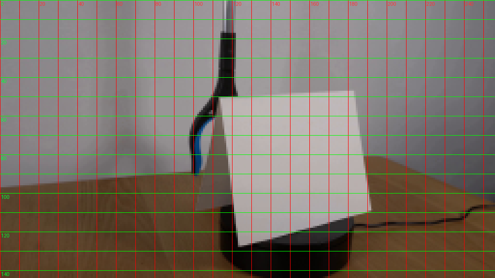
视觉工具实际返回图片 4
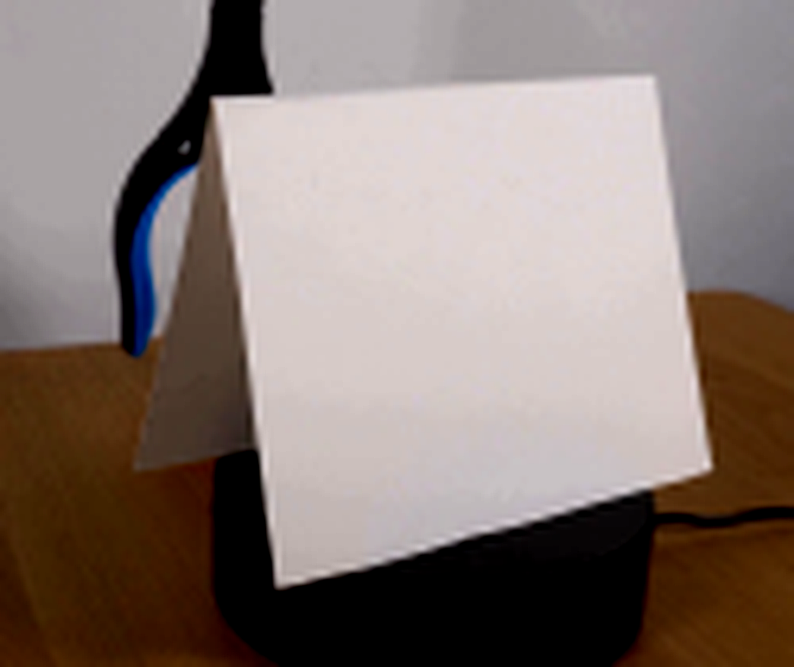
视觉工具实际返回图片 5
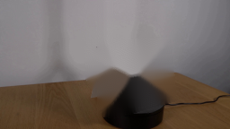
视觉工具实际返回图片 6
视觉工具实际返回图片 7
视觉工具实际返回图片 8
视觉工具实际返回图片 9
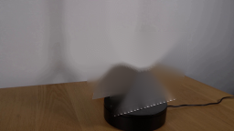
视觉工具实际返回图片 10
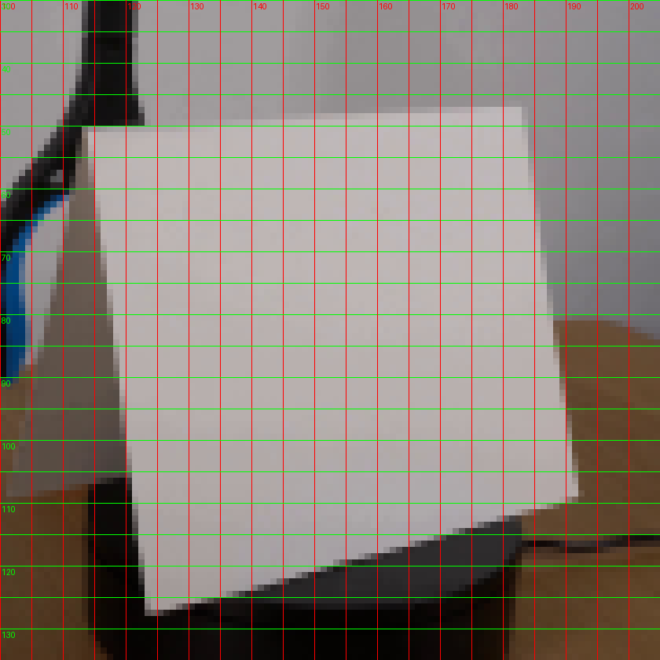
视觉工具实际返回图片 11
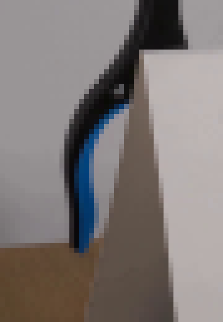
命令 30exit 1
/bin/bash -c 'python3 generate.py'
命令 31exit 1
/bin/bash -c "python3 generate.py && python3 - <<'PY'
from PIL import Image
import numpy as np
f=np.array(Image.open('frames/00.png'))
g=np.array(Image.open('first_frame.png'))
print('frame00 exact:',np.array_equal(f,g), 'maxdiff:',np.abs(f.astype(int)-g.astype(int)).max())
print('frames:',len(__import__('os').listdir('frames')))
PY"命令 32exit 1
/bin/bash -c "python3 generate.py && python3 - <<'PY'
from PIL import Image
import numpy as np, os
f=np.array(Image.open('frames/00.png'))
g=np.array(Image.open('first_frame.png'))
print('frame00 exact:',np.array_equal(f,g), 'maxdiff:',np.abs(f.astype(int)-g.astype(int)).max())
print('frames:',len(os.listdir('frames')))
PY"命令 33exit 0
/bin/bash -c "python3 generate.py && python3 - <<'PY'
from PIL import Image
import numpy as np, os
f=np.array(Image.open('frames/00.png'))
g=np.array(Image.open('first_frame.png'))
print('frame00 exact:',np.array_equal(f,g), 'maxdiff:',np.abs(f.astype(int)-g.astype(int)).max())
print('frames:',len(os.listdir('frames')))
PY"命令 34exit 0
/bin/bash -c "python3 - <<'PY'
from PIL import Image
import numpy as np
im=Image.open('.tmp/preview_10.png').resize((1024,576),Image.Resampling.NEAREST)
im.save('.tmp/p10big.png')
PY"命令 35exit 0
/bin/bash -c "python3 - <<'PY'
from PIL import Image
import numpy as np
for i in range(20):
im=Image.open(f'frames/{i:02d}.png')
a=np.array(im)
# mean diff vs prev, bbox of changed pixels
if i:
b=np.array(Image.open(f'frames/{i-1:02d}.png')).astype(int)
d=np.abs(a.astype(int)-b).max(2)
ys,xs=np.where(d>8)
print(i, round(d.mean(),2), (xs.min(),ys.min(),xs.max(),ys.max()) if len(xs) else None)
PY"命令 36exit 0
/bin/bash -c "python3 - <<'PY'
from PIL import Image
import numpy as np
for i in [0,1,2,10,19]:
a=np.array(Image.open(f'frames/{i:02d}.png'))
print(i, a[100,150],a[50,150],a[125,150],a[120,115],a[120,180])
PY"命令 37exit 0
/bin/bash -c "python3 - <<'PY'
import cv2
im=cv2.imread('first_frame.png')
# affine sample RGB bbox values
for pt in [(124,50),(188,50),(188,105),(125,122),(150,75)]: print(pt,cv2.cvtColor(im,cv2.COLOR_BGR2RGB)[pt[1],pt[0]])
PY"命令 38exit 0
/bin/bash -c "python3 - <<'PY'
import cv2, numpy as np
im=cv2.imread('first_frame.png')
# card quad using boundary observations
src=np.float32([[124,50],[188,50],[188,105],[125,122]])
dst=np.float32([[0,0],[279,0],[279,319],[0,319]])
M=cv2.getPerspectiveTransform(src,dst)
t=cv2.warpPerspective(im,M,(280,320))
# print texture mean center
print(cv2.cvtColor(t,cv2.COLOR_BGR2RGB)[160,140])
# reverse warp texture to source and compare
M2=cv2.getPerspectiveTransform(dst,src)
r=cv2.warpPerspective(t,M2,(256,144))
print(cv2.cvtColor(r,cv2.COLOR_BGR2RGB)[75,150],cv2.cvtColor(im,cv2.COLOR_BGR2RGB)[75,150])
cv2.imwrite('.tmp/tex.png',t)
PY"命令 39exit 0
/bin/bash -c "python3 - <<'PY'
import sys
sys.path.insert(0,'.')
import generate as g, cv2, numpy as np
im=cv2.imread('first_frame.png'); bgr=cv2.cvtColor(im,cv2.COLOR_BGR2RGB)
# plate and tex same
p=cv2.cvtColor(g.make_plate(im),cv2.COLOR_BGR2RGB)
t=cv2.cvtColor(g.card_texture(im),cv2.COLOR_BGR2RGB)
print('tex',t[160,140])
large=cv2.resize(p,(1024,576),interpolation=cv2.INTER_CUBIC)
# card quad should match original roughly
q=g.card_quad(0.0)
print('quad',q)
g.draw_card(large,t,q,0)
out=cv2.resize(large,(256,144),interpolation=cv2.INTER_AREA)
print(out[75,150],out[50,150],out[100,150])
PY"命令 40exit 0
/bin/bash -c "python3 - <<'PY'
import sys; sys.path.insert(0,'.')
import generate as g, cv2, numpy as np
im=cv2.imread('first_frame.png'); p=cv2.cvtColor(g.make_plate(im),cv2.COLOR_BGR2RGB); t=cv2.cvtColor(g.card_texture(im),cv2.COLOR_BGR2RGB)
large=cv2.resize(p,(1024,576),interpolation=cv2.INTER_CUBIC)
# inspect large tex center, before and after
print('tex',t[160,140])
q=g.card_quad(0)
h,w=large.shape[:2]; qq=q*4; src=np.float32([[0,0],[279,0],[279,319],[0,319]])
M=cv2.getPerspectiveTransform(src,qq)
warped=cv2.warpPerspective(t,M,(w,h),flags=cv2.INTER_CUBIC)
print('warp',warped[300,600])
mask=np.zeros((h,w),np.uint8);cv2.fillPoly(mask,[qq.astype(np.int32)],255);mask=cv2.GaussianBlur(mask,(0,0),2.2)
print('mask',mask[300,600])
a=g.blend(large,warped,mask.astype(float)/255)
print('blend',a[300,600])
PY"命令 41exit 0
/bin/bash -c "python3 - <<'PY'
import sys; sys.path.insert(0,'.')
import generate as g, cv2, numpy as np
im=cv2.imread('first_frame.png'); p=cv2.cvtColor(g.make_plate(im),cv2.COLOR_BGR2RGB); t=cv2.cvtColor(g.card_texture(im),cv2.COLOR_BGR2RGB)
large=cv2.resize(p,(1024,576),interpolation=cv2.INTER_CUBIC); g.draw_card(large,t,g.card_quad(0),0)
for pt in [(600,300),(600,200),(600,400)]:print('large',pt,large[pt[1],pt[0]])
out=cv2.resize(large,(256,144),interpolation=cv2.INTER_AREA)
print('out',out[75,150])
# compare nearest resize
print('out direct',cv2.resize(large,(256,144),interpolation=cv2.INTER_AREA)[75,150])
PY"命令 42exit 0
/bin/bash -c "nl -ba generate.py | sed -n '105,165p'"
命令 43exit 0
/bin/bash -c 'python3 generate.py'
命令 44exit 0
/bin/bash -c "python3 - <<'PY'
from PIL import Image,ImageDraw
ims=[Image.open(f'frames/{i:02d}.png') for i in range(20)]
out=Image.new('RGB',(256*5,144*4+21*4),(25,28,35)); d=ImageDraw.Draw(out)
for i,im in enumerate(ims):
x=(i%5)*256;y=(i//5)*(144+21)
d.text((x+4,y+3),f'{i:02d}',fill='white');out.paste(im,(x,y+21))
out.resize((1280,1320),Image.Resampling.NEAREST).save('.tmp/all_frames_nearest.png')
PY"命令 45exit 0
/bin/bash -c "python3 - <<'PY'
from PIL import Image
for i in [0,1,5,10,15,19]:
Image.open(f'frames/{i:02d}.png').resize((1024,576),Image.Resampling.NEAREST).save(f'.tmp/f{i:02d}_big.png')
PY"命令 46exit 1
/bin/bash -c "python3 - <<'PY'
import json
s=json.load(open('task_spec.json'));print(s)
PY"命令 47exit 0
/bin/bash -c "du -h index.html pixels.npz inspection.png transition_check.png && python3 - <<'PY'
from PIL import Image
import numpy as np
# ensure no clipping at right/bottom and all exact shape
for i in [0,10,19]:
a=np.array(Image.open(f'frames/{i:02d}.png'));print(i,a.shape,a.dtype,a.min(),a.max(),a.mean(axis=(0,1)))
PY"命令 48exit 0
/bin/bash -c "python3 - <<'PY'
import numpy as np
from PIL import Image
for i in [0,1,10,19]:
a=np.array(Image.open(f'frames/{i:02d}.png'))
print(i,'wall',a[20,230],'table',a[140,230],'card',a[70,150],'platform',a[124,160])
PY"命令 49exit 0
/bin/bash -c "python3 - <<'PY'
import numpy as np
from PIL import Image
im=np.array(Image.open('first_frame.png')).astype(np.float32)
# Identify low-sat light pixels, print y-boundary per x by threshold
for x in [110,112,115,118,120,122,124,126,180,185,188,190,192,195,200,204]:
ys=np.where((im[:,x,0]>120)&(im[:,x,0]-im[:,x,2]<20)&(im[:,x,1]>110))[0]
ys=ys[(ys>25)&(ys<135)]
print(x, ys.min() if len(ys) else None,ys.max() if len(ys) else None)
PY"命令 50exit 0
/bin/bash -c "python3 - <<'PY'
import numpy as np
from PIL import Image
im=np.array(Image.open('first_frame.png')).astype(float)
# image gradient color distance and use scan for strong differences
for y in [32,34,36,38,40,42,44,46,48,50,105,108,110,112,115,118,120,122,124,126,128,130]:
g=np.linalg.norm(np.diff(im[y],axis=0),axis=1)
inds=np.where(g>80)[0]
print(y,inds[:20].tolist(), 'max',round(g.max(),1))
PY"命令 51exit 0
/bin/bash -c "python3 - <<'PY'
import numpy as np
from PIL import Image
im=np.array(Image.open('first_frame.png')).astype(float)
for y in [32,34,36,38,40,42,44,46,48,50]:
g=np.linalg.norm(np.diff(im[y],axis=0),axis=1)
inds=np.where(g>50)[0]
print(y,inds.tolist())
PY"命令 52exit 0
/bin/bash -c "python3 - <<'PY'
from PIL import Image
import numpy as np
im=np.array(Image.open('first_frame.png'))
for y in [30,32,34,35,36,38,40,42,44,46,48,50,55,60,65,70,75,80,85,90,95,100,105,110,115,120,125,130]:
print('y',y,[(x,tuple(im[y,x])) for x in [100,105,110,112,115,118,120,122,124,126,130,140,150,160,170,180,185,188,190,192,195,200,204,208,212]])
PY"命令 53exit 0
/bin/bash -c "python3 - <<'PY'
import cv2, numpy as np
im=cv2.imread('first_frame.png')
# get contours of dark foreground pixels for stem
hsv=cv2.cvtColor(im,cv2.COLOR_BGR2HSV)
m=((hsv[:,:,2]<60)&(np.indices(im.shape[:2])[1]>85)&(np.indices(im.shape[:2])[1]<130)).astype(np.uint8)*255
n,lab,stats,cent=cv2.connectedComponentsWithStats(m)
for i in range(1,n):
x,y,w,h,a=stats[i]
if a>15: print(i,(x,y,w,h,a))
PY"命令 54exit 0
/bin/bash -c "python3 - <<'PY'
from PIL import Image
import numpy as np
im=np.array(Image.open('first_frame.png'))
# dark mask bounding component stem includes gray body
m=(im[:,:,0]<70)&(im[:,:,1]<70)&(im[:,:,2]<70)
for y in range(0,100,2):
xs=np.where(m[y] & (np.arange(256)>85)&(np.arange(256)<135))[0]
if len(xs): print(y,xs.min(),xs.max())
PY"命令 55exit 0
/bin/bash -c "python3 - <<'PY'
from PIL import Image
import numpy as np
im=np.array(Image.open('first_frame.png'))
for y in [45,48,50,52,55,58,60,62,65,68,70,72,75,80,85,90]:
xs=[]
for x in range(95,130):
r,g,b=im[y,x]
# print gray/brown body pixels (not white, not blue)
if r<160 and abs(int(r)-int(b))<20 and g<r+5: xs.append((x,(int(r),int(g),int(b))))
print(y,xs)
PY"命令 56exit 0
/bin/bash -c "python3 - <<'PY'
from PIL import Image
import numpy as np
im=np.array(Image.open('first_frame.png'))
for y in range(30,135,5):
print(y, 'L', tuple(im[y,110]), 'X112',tuple(im[y,112]),'X115',tuple(im[y,115]),'X118',tuple(im[y,118]),'X120',tuple(im[y,120]),'X122',tuple(im[y,122]),'R',tuple(im[y,190]),'R195',tuple(im[y,195]))
PY"命令 57exit 0
/bin/bash -c "python3 - <<'PY'
from PIL import Image
import numpy as np
for i in [0,1,2,5,10,19]:
a=np.array(Image.open(f'frames/{i:02d}.png'))
print(i, a[70,150],a[70,170],a[50,150],a[100,150])
PY"命令 58exit 0
/bin/bash -c "python3 - <<'PY'
from PIL import Image
import numpy as np
for i in [0,1,2,3,4,5,10,15,19]:
a=np.array(Image.open(f'frames/{i:02d}.png')).astype(int)
# background outside card bounds sample
pts=[(20,20),(230,20),(20,140),(240,140),(80,120),(220,125)]
print(i,[tuple(a[y,x]) for x,y in pts])
PY"命令 59exit 0
/bin/bash -c "python3 - <<'PY'
import numpy as np, cv2
from PIL import Image
# model alpha and texture plane test quickly: use original card texture at frame1, render with exact quad and inspect mean
import sys;sys.path.insert(0,'.')
import generate as g
f=np.array(Image.open('first_frame.png')); im=cv2.cvtColor(f,cv2.COLOR_RGB2BGR)
t=cv2.cvtColor(g.card_texture(im),cv2.COLOR_BGR2RGB)
# compare quad center mapping
print('tex 150,75',t[160,140])
# original card appears 187,180,178
# check high res after card render but no lip edge
PY"命令 60exit 0
/bin/bash -c "python3 - <<'PY'
from PIL import Image
import numpy as np
for i in [0,1,2,5,10,15,19]:
a=np.array(Image.open(f'frames/{i:02d}.png'))
# edge/card center manually
print(i,'edge',a[50,150],'middle',a[80,150],'bottom',a[110,150],'right',a[80,180])
PY"命令 61exit 0
/bin/bash -c "python3 - <<'PY'
from PIL import Image
import numpy as np
# card brightness at rows/cols over time for motion sanity
for i in [0,1,5,10,15,19]:
a=np.array(Image.open(f'frames/{i:02d}.png'))
print(i,[round(a[70,x].mean(),1) for x in [125,140,155,170,185]])
PY"命令 62exit 0
/bin/bash -c "python3 - <<'PY'
from PIL import Image
import numpy as np
im=np.array(Image.open('first_frame.png'))
# print card boundaries exact from manually picked rows; test quad at frame0 expected.
# We'll use a grid of edge points from detected runs (white high sat low)
for y in [50,55,60,65,70,75,80,85,90,95,100,105,110,115,120,125]:
m=(im[y,:,1]>140)&(im[y,:,0]>150)&(im[y,:,2]>150)
xs=np.where(m & (np.arange(256)>=105))[0]
# choose contiguous after x 110
print(y,xs.min() if len(xs) else None,xs.max() if len(xs) else None)
PY"命令 63exit 0
/bin/bash -c "python3 - <<'PY'
import numpy as np
from PIL import Image
im=np.array(Image.open('first_frame.png')).astype(np.float32)
for y in [50,55,60,65,70,75,80,85,90,95,100,105,110,115,120,125]:
# card criterion using whiteness (R>155,G>145,B>145), restrict x>105
for th in [0,1,2]:
m=(im[y,:,0]>155-th)&(im[y,:,1]>145-th)&(im[y,:,2]>145-th)
xs=np.where(m & (np.arange(256)>105))[0]
# print run near card not background: background also. use saturation diff max-min<20
sat=np.max(im[y],axis=1)-np.min(im[y],axis=1)
m=m & (sat<22)
xs=np.where(m & (np.arange(256)>105))[0]
if len(xs): print(y,th,xs.min(),xs.max())
PY"命令 64exit 0
/bin/bash -c "python3 - <<'PY'
from PIL import Image
import numpy as np
im=np.array(Image.open('first_frame.png'))
# sample card texture color vs alpha at specific mapping using current generate
import sys;sys.path.insert(0,'.')
import generate as g, cv2
bgr=cv2.cvtColor(im,cv2.COLOR_RGB2BGR); t=cv2.cvtColor(g.card_texture(bgr),cv2.COLOR_BGR2RGB)
# at frame1 render only card on plate; compare output center and expected texture
large=cv2.resize(cv2.cvtColor(g.make_plate(bgr),cv2.COLOR_BGR2RGB),(1024,576),interpolation=cv2.INTER_CUBIC)
g.draw_card(large,t,g.card_quad(1/19),1/19)
out=cv2.resize(large,(256,144),interpolation=cv2.INTER_AREA)
for pt in [(150,70),(170,70),(150,100),(125,70)]:print(pt,out[pt[1],pt[0]])
PY"命令 65exit 0
/bin/bash -c "python3 - <<'PY'
from PIL import Image
import numpy as np
for i in [0,1,10,19]:
a=np.array(Image.open(f'frames/{i:02d}.png'))
print(i,'darkedge',a[70,125],a[70,130],a[70,170],a[70,185])
PY"命令 66exit 0
/bin/bash -c "python3 - <<'PY'
import numpy as np
from PIL import Image
im=np.array(Image.open('first_frame.png'))
# color distances for platform around x150 y120 etc, find oval extents on row
for y in [104,106,108,110,112,114,116,118,120,122,124,126,128,130,132,134,136,138,140]:
a=im[y].astype(int)
# dark near neutral and x 90-215
m=(a[:,0]<80)&(a[:,1]<75)&(a[:,2]<80)
xs=np.where(m & (np.arange(256)>90)&(np.arange(256)<215))[0]
# contiguous runs >2
if len(xs):
starts=xs[np.r_[True,np.diff(xs)>1]]; ends=xs[np.r_[np.diff(xs)>1,True]]
print(y,list(zip(starts.tolist(),ends.tolist())))
PY"命令 67exit 0
/bin/bash -c "python3 - <<'PY'
from PIL import Image
import numpy as np
# compute first frame exact and transition metrics
f0=np.array(Image.open('frames/00.png')).astype(int)
f1=np.array(Image.open('frames/01.png')).astype(int)
print('changed frac >10:',np.mean(np.abs(f0-f1).max(2)>10))
print('mean diff',np.abs(f0-f1).mean())
# check all frames differ enough
for i in range(1,20):
a=np.array(Image.open(f'frames/{i:02d}.png')).astype(int); b=np.array(Image.open(f'frames/{i-1:02d}.png')).astype(int)
print(i,round(np.abs(a-b).mean(),2),round(np.mean(np.abs(a-b).max(2)>10),3))
PY"命令 68exit 0
/bin/bash -c "python3 - <<'PY'
from PIL import Image
import numpy as np
im=np.array(Image.open('first_frame.png')).astype(int)
# expected exact tool ranges by comparing to inpaint? no
# find edge alpha issue: plot mean absolute deviation from original for frame1 in card interior
f1=np.array(Image.open('frames/01.png')).astype(int)
d=np.abs(f1-im).mean(2)
# sample grid card interior where d < 30
for y in [55,65,75,85,95,105,115,125]:
print(y,[round(d[y,x],1) for x in range(120,191,10)])
PY"命令 69exit 0
/bin/bash -c "python3 - <<'PY'
from PIL import Image
import numpy as np
im=np.array(Image.open('first_frame.png')).astype(int)
for y in [48,50,52,54,56,58,60,70,80,90,100,110,115,120,125]:
print(y,'L',tuple(im[y,124]),'L2',tuple(im[y,125]),'L3',tuple(im[y,118]),'R',tuple(im[y,188]),'R2',tuple(im[y,189]),'R3',tuple(im[y,190]))
PY"命令 70exit 0
/bin/bash -c "python3 generate.py && python3 - <<'PY'
from PIL import Image
import numpy as np, os
f=np.array(Image.open('frames/00.png')); g=np.array(Image.open('first_frame.png'))
print('frame00 exact:',np.array_equal(f,g))
print('frame count:',len(os.listdir('frames')))
PY"命令 71exit 0
/bin/bash -c "python3 - <<'PY'
from PIL import Image
import numpy as np, json, base64
# Validate the player's packed uint32 delta stream reconstructs all frames.
data=json.loads(open('index.html').read().split('const DATA=',1)[1].split(',W=',1)[0])
def unpack(s):
b=base64.b64decode(s); return np.frombuffer(b,dtype='<u4')
frames=[unpack(data['first'])]
for enc in data['deltas']:
f=frames[-1].copy(); p=unpack(enc); i=0
while i<len(p):
start=int(p[i]); count=int(p[i+1]); i+=2
f[start:start+count]=p[i:i+count]; i+=count
frames.append(f)
arr=np.stack(frames).reshape(20,144,256)
pixels=(arr>>16)&255, (arr>>8)&255, arr&255
rgb=np.stack(pixels,axis=-1).astype(np.uint8)
import os
for i in [0,1,10,19]:
src=np.array(Image.open(f'frames/{i:02d}.png'))
print(i,np.array_equal(src,rgb[i]))
print('data frames',data['frames'],'fps',data['fps'],'size',data['width'],data['height'])
PY"命令 72exit 0
/bin/bash -c 'git status --short 2>/dev/null || true && python3 -m py_compile generate.py && find frames -maxdepth 1 -type f | wc -l && ls -lh generate.py index.html pixels.npz inspection.png transition_check.png'
命令 73exit 0
/bin/bash -c "python3 - <<'PY'
from PIL import Image
import numpy as np
# final sanity: dimensions, frame00 equality, nonblank, motion range
f0=np.array(Image.open('first_frame.png'))
frames=np.stack([np.array(Image.open(f'frames/{i:02d}.png')) for i in range(20)])
print('shape',frames.shape,'dtype',frames.dtype)
print('frame00 exact',np.array_equal(frames[0],f0))
print('std per frame min',min(float(f.std()) for f in frames))
print('changed pixels 00->19',int(np.sum(np.any(frames[0]"'!=frames[-1],axis=2))))
PY'命令 74exit 0
/bin/bash -c "python3 - <<'PY'
from PIL import Image
import numpy as np
# Check whether transparent holes from alpha generate white-ish card gaps
for i in [0,1,5,10,19]:
a=np.array(Image.open(f'frames/{i:02d}.png')).astype(int)
# use mask interior manually not reliable
print(i,'card center',a[80,150].tolist())
PY"命令 75exit 0
/bin/bash -c "python3 - <<'PY'
from PIL import Image
im=Image.open('first_frame.png')
im.crop((90,35,140,105)).resize((400,560),Image.Resampling.LANCZOS).save('.tmp/tool_compare.png')
PY"命令 76exit 0
/bin/bash -c "python3 - <<'PY'
from PIL import Image
for i in [1,5,10,19]:
Image.open(f'frames/{i:02d}.png').crop((85,0,205,135)).resize((600,675),Image.Resampling.LANCZOS).save(f'.tmp/c{i:02d}.png')
PY"命令 77exit 0
/bin/bash -c "python3 - <<'PY'
from PIL import Image
import numpy as np
# per-frame optical flow approximations by centroid of dark stem region
for i in range(20):
a=np.array(Image.open(f'frames/{i:02d}.png')).astype(float)
# darkness threshold in top left-ish
m=(a.mean(2)<70)&(np.indices(a.shape[:2])[1]>85)&(np.indices(a.shape[:2])[1]<135)
ys,xs=np.where(m)
print(i, (round(xs.mean(),1),round(ys.mean(),1)) if len(xs) else None, len(xs))
PY"命令 78exit 0
/bin/bash -c "python3 - <<'PY' import cv2, numpy as np from PIL import Image # measure the real stem mask widths at row 30 and compare generated frame 1 via x=90:130 for fn in ['first_frame.png','frames/01.png','frames/10.png','frames/19.png']: a=np.array(Image.open(fn)).astype(float) print(fn) for y in [10,20,30,40,50,60]: m=a[y].mean(1)<80 xs=np.where(m & (np.arange(256)>85)&(np.arange(256)<135))[0] print(y,(xs.min(),xs.max()) if len(xs) else None) PY"
命令 79exit 0
/bin/bash -c "python3 - <<'PY'
from PIL import Image
import numpy as np
# visual/quantitative check: final ball visible orange area and tool dark region
for i in [0,1,5,10,15,19]:
a=np.array(Image.open(f'frames/{i:02d}.png')).astype(int)
m=(a[:,:,0]>150)&(a[:,:,0]>a[:,:,1]*1.35)&(a[:,:,1]>45)&(a[:,:,2]<80)
print(i,'orange px',int(m.sum()),'bbox', (np.where(m)[1].min(),np.where(m)[0].min(),np.where(m)[1].max(),np.where(m)[0].max()) if m.any() else None)
PY"命令 80exit 0
/bin/bash -c "python3 - <<'PY'
from PIL import Image
import numpy as np
# dark masks card area and confirm no accidental full-white hole in card
for i in [1,5,10,15,19]:
a=np.array(Image.open(f'frames/{i:02d}.png'))
print(i,a[80,150],a[85,130],a[70,180],a[120,160])
PY"命令 81exit 0
/bin/bash -c "python3 - <<'PY'
from PIL import Image
import numpy as np
# validate edge of paper stays inside scene and ball not duplicated in background area
for i in [1,10,19]:
a=np.array(Image.open(f'frames/{i:02d}.png'))
print(i,'right',a[75,190].tolist(),'bottom',a[120,150].tolist(),'left',a[75,118].tolist())
PY"命令 82exit 0
/bin/bash -c "python3 - <<'PY'
from PIL import Image, ImageDraw
# native-size final QA strip, one row, enlarged only for inspection
ims=[Image.open(f'frames/{i:02d}.png') for i in range(20)]
out=Image.new('RGB',(256*5,144*4+21*4),(25,28,35));d=ImageDraw.Draw(out)
for i,im in enumerate(ims):
x=(i%5)*256;y=(i//5)*(144+21);d.text((x+5,y+3),f'{i:02d}',fill='white');out.paste(im,(x,y+21))
out.save('.tmp/final_contact.png')
PY"命令 83exit 0
/bin/bash -c "python3 - <<'PY'
from PIL import Image
import numpy as np
# validate final artifacts and renderer reproducibility hash of all frames
import hashlib
h=hashlib.sha256()
for i in range(20):
h.update(np.array(Image.open(f'frames/{i:02d}.png')).tobytes())
print(h.hexdigest())
PY"命令 84exit 0
/bin/bash -c "python3 generate.py >/dev/null && python3 - <<'PY'
from PIL import Image
import numpy as np, hashlib
h=hashlib.sha256()
for i in range(20): h.update(np.array(Image.open(f'frames/{i:02d}.png')).tobytes())
print(h.hexdigest())
PY"命令 85exit 0
/bin/bash -c "ls -lh index.html pixels.npz inspection.png transition_check.png generate.py && test -f frames/00.png && test -f frames/19.png && echo 'artifacts ok'"
视觉工具实际返回图片 12
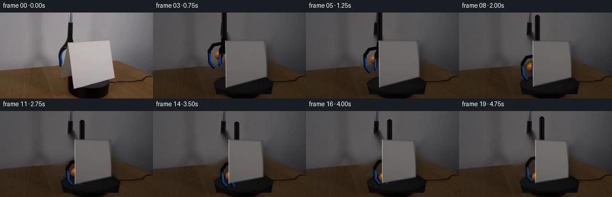
视觉工具实际返回图片 13
视觉工具实际返回图片 14
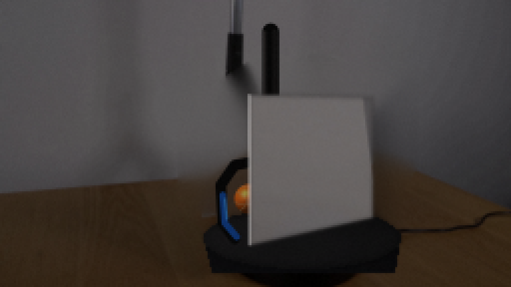
视觉工具实际返回图片 15
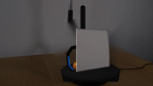
视觉工具实际返回图片 16

视觉工具实际返回图片 17
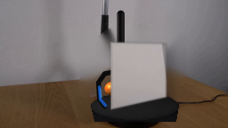
视觉工具实际返回图片 18
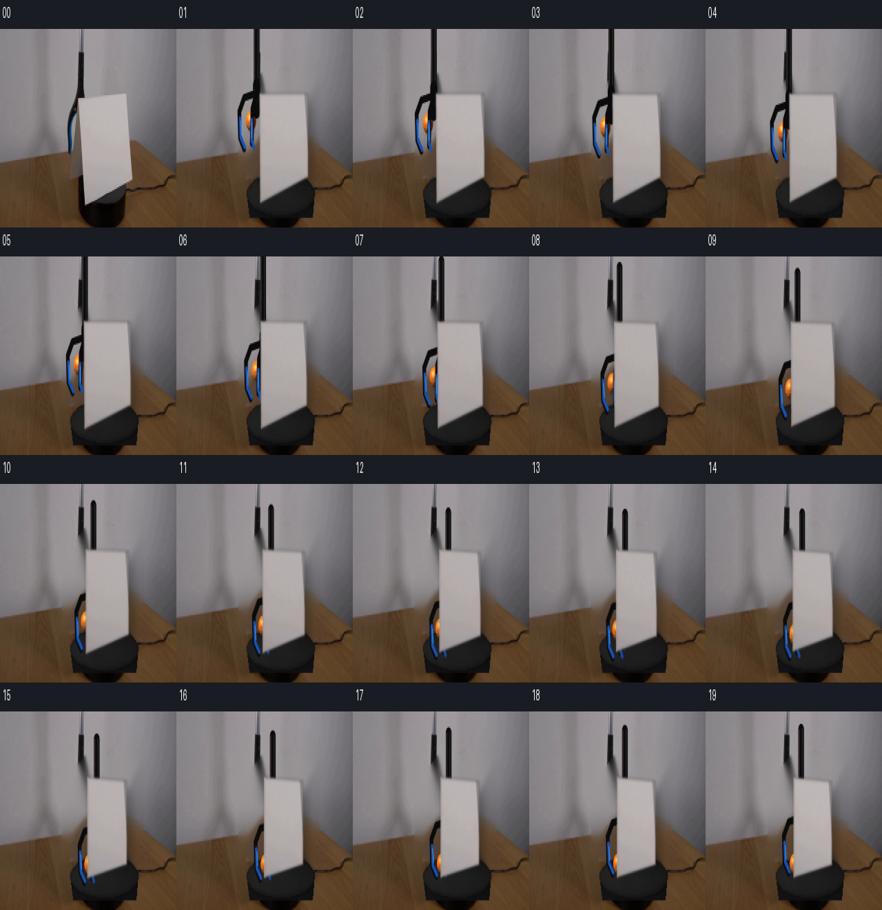
视觉工具实际返回图片 19
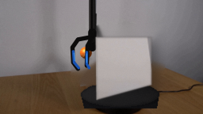
视觉工具实际返回图片 20
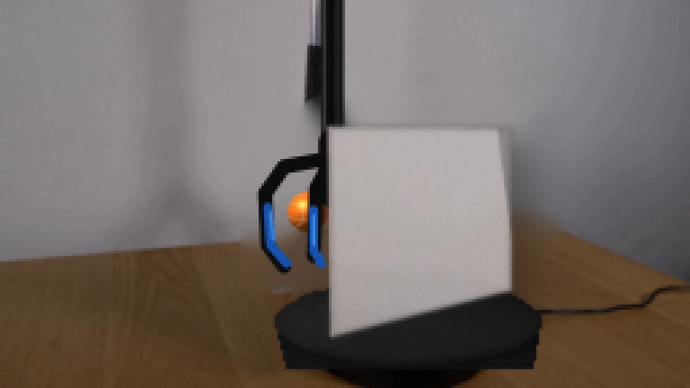
视觉工具实际返回图片 21
视觉工具实际返回图片 22

视觉工具实际返回图片 23
视觉工具实际返回图片 24

视觉工具实际返回图片 25
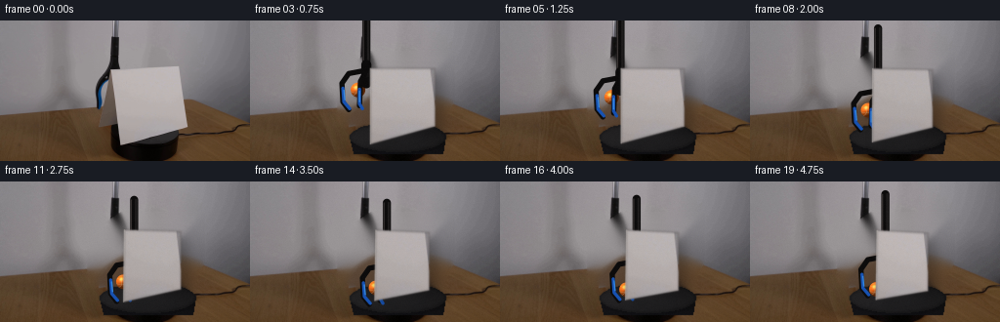
视觉工具实际返回图片 26
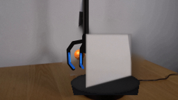
视觉工具实际返回图片 27
视觉工具实际返回图片 28
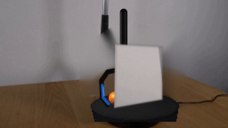
视觉工具实际返回图片 29
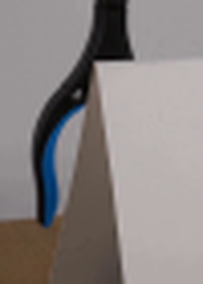
视觉工具实际返回图片 30
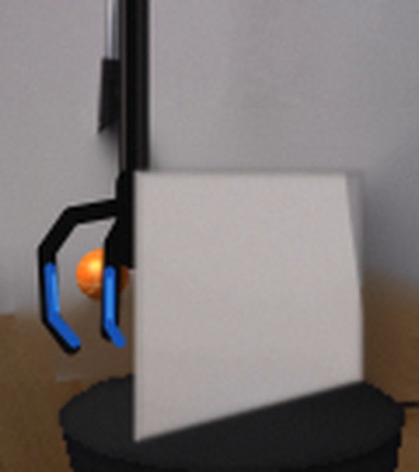
视觉工具实际返回图片 31
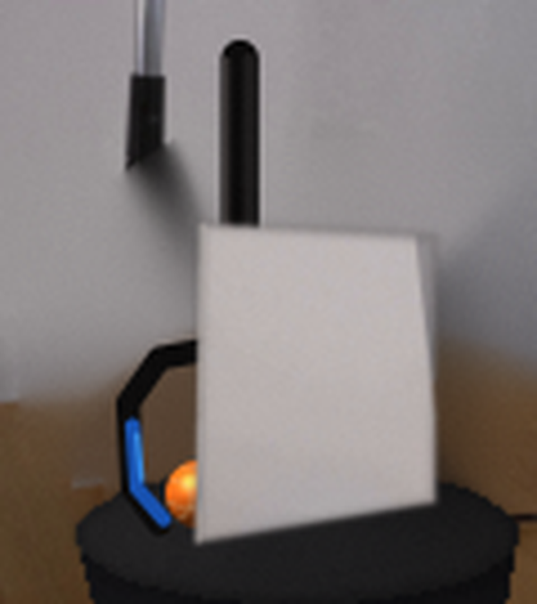
视觉工具实际返回图片 32
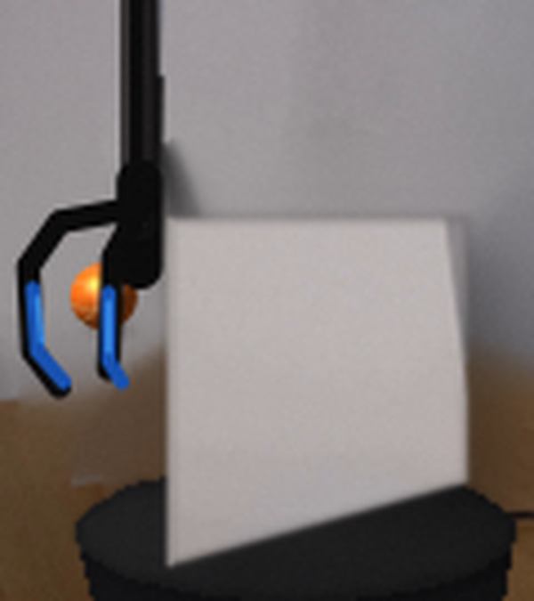
视觉工具实际返回图片 33
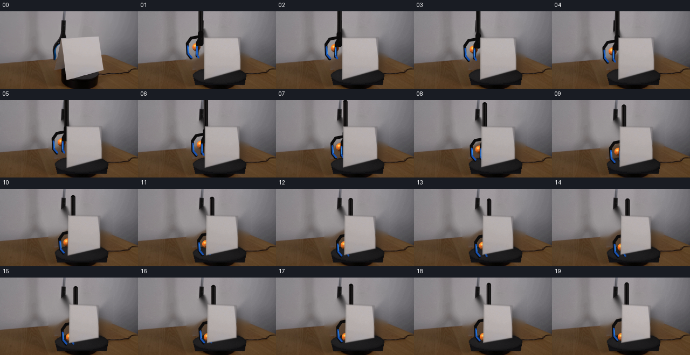
保存候选 3 份；完成命令 85 次；可验证图片返回 33 张。原始 API 响应与完整日志保留在本地。